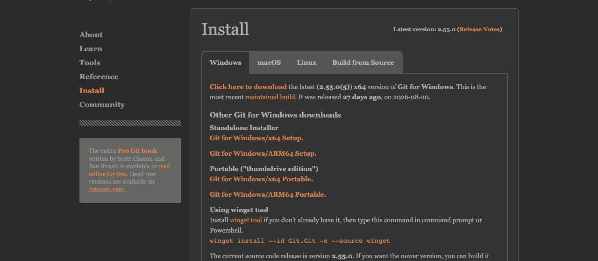
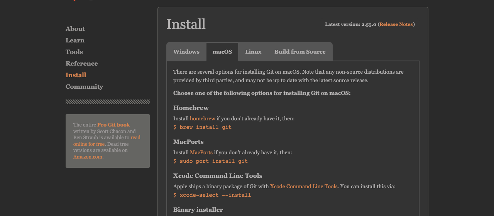
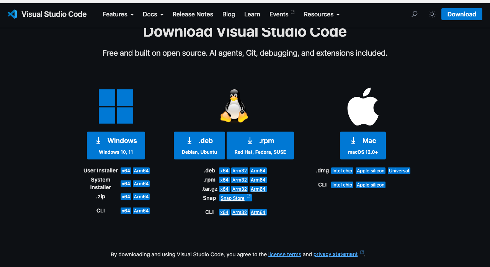
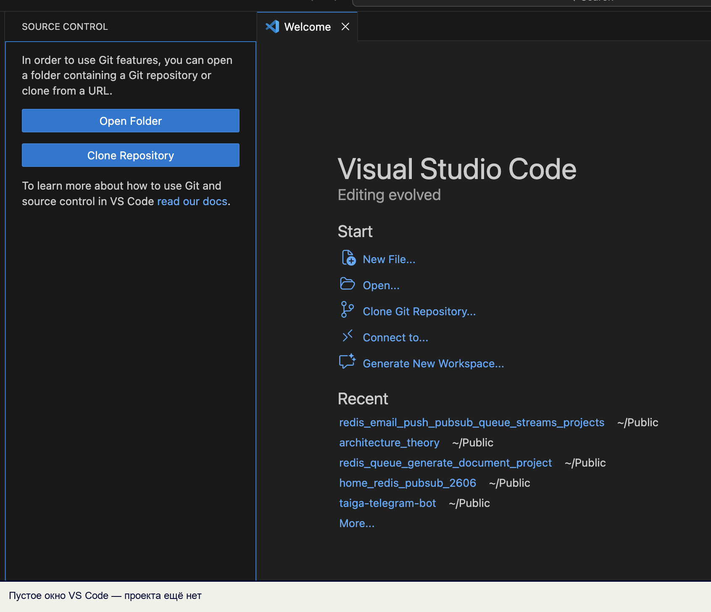
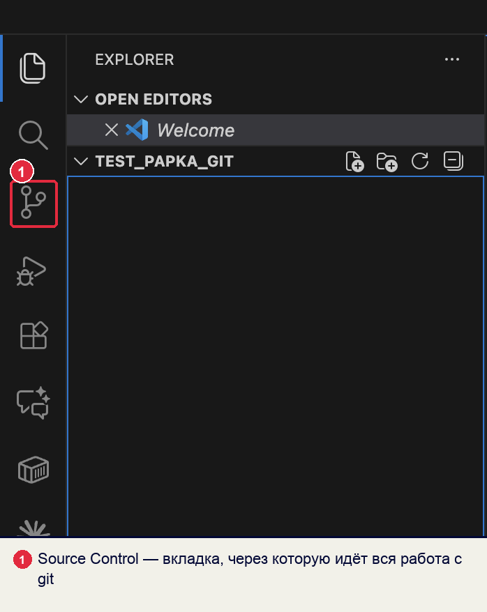
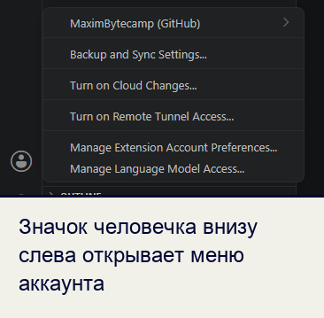
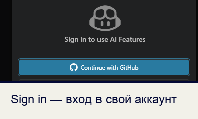
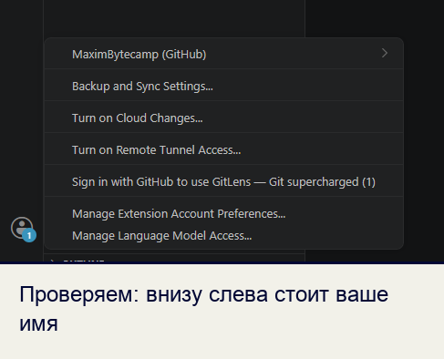

Справочник по Git и GitHub · модуль 1 · что такое контроль версий
Глава 1.4
Установка Git
и VS Code
Ставим две программы и настраиваем их так, чтобы дальше всё работало без сюрпризов. Шаги расписаны по порядку и отдельно для каждой системы — переключите её кнопкой в шапке, если определилась не та.
- Категория
- Рабочее место
- Уровень
- Начальный
- Связанные темы
- Панель Source Control, первый репозиторий
- Зачем это знать
- Подготовить компьютер к работе и подписать коммиты своим именем
§1Что именно мы ставим
Программы две, и они разные по назначению. Git — сам инструмент контроля версий: он ведёт историю и выполняет все операции с ней. У Git нет окна, он работает в командной строке и отвечает на запросы других программ. Visual Studio Code — редактор кода, в котором мы будем писать и нажимать кнопки; работу с историей он передаёт установленному Git.
Порядок важен: сначала Git, потом редактор. VS Code ищет Git при запуске, и если поставить его вторым, панель Source Control останется пустой до перезапуска.
Если за компьютером до вас работали, обе программы, скорее всего, установлены. Проверка занимает минуту — §4. Тогда переходите сразу к §6: настройки Git привязаны к учётной записи, и ваши придётся задать заново.
§2Шаг 1. Скачать Git
Единственный правильный адрес — git-scm.com/downloads. Это сайт самого проекта; всё, что предлагают поисковики поверх него, — чужие сборки с непонятным содержимым.

git-scm.com/downloads/win. Верхняя ссылка Click here to download сразу отдаёт нужный установщик — версия и разрядность подобраны сайтом.Скачается файл вида Git-2.55.0-64-bit.exe размером около 70 МБ. Номер версии у вас будет свежее — это нормально.

git-scm.com/downloads/mac. На macOS способов несколько, и скачивать установщик обычно не нужно — подробности на следующем шаге.На macOS Git проще поставить командой, а не файлом: система умеет это сама. Установщик с сайта пригодится, только если командная строка почему-то недоступна.
В Linux Git ставится из репозитория дистрибутива одной командой — скачивать с сайта ничего не нужно. Команды для разных систем на следующем шаге.
§3Шаг 2. Установить Git
Запустите скачанный файл. Установщик задаст около десяти вопросов; почти везде подходит предложенный вариант, но четыре экрана стоит пройти внимательно.
- Select Components — оставьте как есть. Пункт
Windows Explorer integrationдобавляет в контекстное меню папки команду «Open Git Bash here», она пригодится. - Choosing the default editor — выберите
Use Visual Studio Code as Git's default editor, если редактор уже стоит. Иначе оставьте Vim и вернитесь к этому позже: Vim закрывается сочетанием Esc, затем:q!и Enter, и это первое, обо что спотыкаются. - Adjusting the name of the initial branch — выберите
Override the default branch nameи оставьтеmain. Так называется главная ветка на GitHub; со старым именемmasterпридётся каждый раз переименовывать. - Adjusting your PATH environment — оставьте средний вариант
Git from the command line and also from 3rd-party software. Это то, что позволяет VS Code найти Git.
Остальные экраны — про библиотеку SSL, окончания строк и терминал — проходите с предложенными значениями. Про окончания строк мы поговорим в §9: там есть тонкость, из-за которой файлы иногда выглядят изменёнными целиком.
Способ зависит от того, что у вас уже есть. Проще всего начать с первого — часто Git ставится вместе с инструментами разработчика, которые система предлагает сама.
xcode-select --install
Откроется окно системы с предложением установить Command Line Tools. Нажмите Install и дождитесь конца — Git будет в комплекте.
brew install git
Этот вариант даёт более свежую версию и удобное обновление. Он подходит, если Homebrew уже установлен; ставить его ради одного Git не обязательно.
sudo apt update sudo apt install git
sudo dnf install git
Пакет называется одинаково почти везде. В Arch — sudo pacman -S git, в openSUSE — sudo zypper install git.
§4Шаг 3. Проверить, что Git на месте
Откройте терминал (Win + R, наберите cmd, или запустите Git Bash из меню «Пуск»)(Cmd + Пробел, наберите «Терминал»)(Ctrl + Alt + T) и выполните одну команду:
git --version
git version 2.51.1
Номер версии может отличаться — важно, что команда вообще ответила. Если вместо этого вы видите «"git" не является внутренней или внешней командой»«command not found: git», загляните в §11: там разобраны причины.
§5Шаг 4. Установить VS Code
Адрес тот же принцип: code.visualstudio.com/download, сайт разработчика.

Запустите установщик. Единственный экран, где нужно задержаться, — Выбор дополнительных задач. Отметьте три пункта:
- Add "Open with Code" action to Windows Explorer file context menu — правый клик по файлу откроет его в редакторе.
- Add "Open with Code" action to Windows Explorer directory context menu — то же для папки. Это самый частый способ открыть проект.
- Add to PATH — позволит запускать редактор командой
codeиз терминала.
Скачается архив. Распакуйте его двойным кликом и перетащите Visual Studio Code в папку Программы — иначе редактор будет запускаться из папки «Загрузки» и потеряется при первой уборке.
Затем добавьте команду code в терминал: откройте редактор, нажмите Cmd + Shift + P, наберите shell command и выберите Install 'code' command in PATH. После этого любую папку можно открыть из терминала командой code .
Скачанный пакет ставится менеджером пакетов:
sudo apt install ./code_*.deb
В Fedora и RHEL — sudo dnf install ./code-*.rpm. Команда code появится в терминале сразу.
§6Шаг 5. Осмотреть окно VS Code
Запустите редактор. Пока проект не открыт, окно выглядит так:

Четыре места, которые понадобятся с первого занятия:
| Что | Где | Как открыть |
|---|---|---|
| Проводник (Explorer) | верхний значок на левой полосе | CtrlCmd + Shift + E |
| Source Control | значок с развилкой на левой полосе | CtrlCmd + Shift + G |
| Терминал | нижняя часть окна | CtrlCtrl + ~ |
| Палитра команд | выпадает сверху | CtrlCmd + Shift + P |

Палитра команд заменяет поиск по меню: открыли, набрали часть названия — получили список подходящих команд. Все действия с Git доступны и через неё, если набрать git.
§7Шаг 6. Представиться Git
Каждый коммит подписан именем и почтой автора — мы видели это в прошлой главе, когда разбирали содержимое коммита. Пока подпись не задана, Git либо откажется делать коммит, либо подставит случайное имя из системы. Вот как выглядит отказ:
Author identity unknown *** Please tell me who you are. Run git config --global user.email "you@example.com" git config --global user.name "Your Name" to set your account's default identity. Omit --global to set the identity only in this repository.
Git сам подсказывает, что делать. Выполните две команды, подставив своё имя и почту:
git config --global user.name "Иван Петров" git config --global user.email "ivan.petrov@example.com"
Ключ --global означает «для всех моих проектов на этом компьютере». Настройки лягут в файл .gitconfig в домашней папке. Проверить, что получилось:
user.name=Иван Петров user.email=ivan.petrov@example.com init.defaultbranch=main
Теперь коммит создаётся и подписывается вашим именем:
7d861b0 Иван Петров <ivan.petrov@example.com>
Проба
GitHub связывает коммит с вашим профилем по адресу почты. Указали другой — коммиты появятся в репозитории, но будут числиться за незнакомцем: без ссылки на профиль и без отметки в вашей активности. Берите тот же адрес, что и в аккаунте. Если адрес скрыт настройкой приватности, GitHub выдаёт служебный вида 12345678+login@users.noreply.github.com — он подходит.
Имя пишите настоящее и полностью: по нему преподаватель и коллеги будут понимать, чей коммит. Ник вроде xXx_coder_xXx в истории проекта выглядит ровно так, как вы представляете.
§8Шаг 7. Войти в аккаунт GitHub
Настройка Git и вход в GitHub — разные вещи. Первое подписывает коммиты, второе даёт редактору право отправлять их на сайт. На учебном компьютере начните с проверки: в редакторе может быть открыт чужой аккаунт.



Пароль при этом нигде не вводится и не хранится: редактор получает от GitHub временный ключ доступа. Как это устроено и что делать, когда ключ нужен вручную, разберём в четвёртом модуле.
§9Шаг 8. Две настройки на будущее
Эти две строки избавляют от двух типовых неприятностей. Выполните их сразу — потом придётся разбираться с последствиями.
git config --global init.defaultBranch main
Новые репозитории будут начинаться с ветки main — так же, как на GitHub. Без этой настройки Git старых версий создаёт ветку master, и при первой отправке на сайт появляются две главные ветки вместо одной.
git config --global core.autocrlf true
Windows завершает строки двумя символами, Linux и macOS — одним. Без этой настройки файл, пришедший от однокурсника с другой системой, Git покажет как изменённый целиком: каждая строка «поменялась», хотя текст тот же. Значение true означает «в репозиторий записывать как в Linux, в рабочей папке держать как в Windows» — обе стороны довольны.
git config --global core.autocrlf input
Windows завершает строки двумя символами, а macOS и Linux — одним. Значение input означает «записывать в репозиторий по-своему, чужие окончания не портить». Без этого файл, пришедший с Windows, Git показывает как изменённый целиком: каждая строка «поменялась», хотя текст тот же.
Полезна и третья настройка — она касается редактора, а не Git. Откройте в VS Code меню File → Preferences → Settings (или Cmd + ,)(или Ctrl + ,), найдите Git: Autofetch и включите. Редактор будет сам проверять, не появились ли изменения на GitHub, и покажет их стрелкой в нижней строке — вы не станете работать поверх устаревшего состояния.
§10Проверка готовности
Пройдите список: всё должно выполняться без ошибок. Если что-то не сходится — §11.
Рабочее место готово, когда
git --version печатает номер версии.git config --global --list показывает ваши user.name и user.email.noreply.init.defaultbranch=main.§11Что делать, если не работает
| Что видно | Почему | Что сделать |
|---|---|---|
"git" не является внутренней или внешней командойcommand not found: git |
Терминал не знает, где лежит программа: он запомнил пути при запуске | Закройте и откройте терминал заново; если не помогло — переустановите Git, выбрав на экране PATH средний вариант |
VS Code пишет Git not found |
Редактор искал Git при запуске, а тот появился позже | Перезапустите VS Code целиком, не только окно |
Please tell me who you are |
Не заданы имя и почта | Выполните две команды из §7 |
detected dubious ownership in repository |
Папка проекта принадлежит другой учётной записи — обычное дело на учебном компьютере | Скопируйте проект в свою домашнюю папку. Если нужен именно этот путь: git config --global --add safe.directory путь |
| Коммиты на GitHub без вашего аватара, автор — незнакомое имя | Почта в настройках Git не совпадает с почтой аккаунта | Исправьте user.email и сделайте новый коммит. Прежние подписи не изменятся: они уже часть истории |
| Каждый файл показан изменённым целиком после клонирования | Разные окончания строк | Задайте core.autocrlf из §9 и склонируйте проект заново |
§12Проверьте себя
Почему Git ставят раньше VS Code?
Редактор ищет Git при запуске. Если поставить его первым, панель Source Control сообщит, что Git не найден, и будет так считать до перезапуска. Порядок «сначала Git, потом редактор» избавляет от лишнего шага.
Чем отличается вход в аккаунт GitHub от команды git config user.name?
Это разные вещи. user.name и user.email — подпись, которая попадает внутрь каждого коммита на вашем компьютере; она работает и без интернета. Вход в аккаунт даёт редактору право отправлять коммиты на сайт. Можно быть подписанным одним именем и войти под другим аккаунтом — тогда коммиты окажутся в репозитории, но не свяжутся с профилем.
Что делает ключ --global в командах настройки?
Записывает настройку в файл .gitconfig в домашней папке, то есть применяет её ко всем вашим проектам на этом компьютере. Без ключа настройка попадёт в .git/config текущего репозитория и будет действовать только в нём — это удобно, когда для одного проекта нужна другая почта.
Зачем менять имя начальной ветки на main?
Чтобы оно совпадало с именем, которое использует GitHub. Иначе после первой отправки в репозитории окажутся две ветки — master с вашей работой и main, созданная сайтом, — и придётся разбираться, какая главная.
Вы сделали коммиты, а на GitHub автор указан как незнакомый человек. Что произошло и что теперь делать?
В настройках Git стоит не та почта: сайт связывает коммит с профилем именно по ней. Задайте правильный адрес командой из §7 — следующие коммиты подпишутся верно. Уже сделанные останутся как есть: подпись входит в содержимое коммита, а менять историю ради этого не стоит.
Объясните своими словами, зачем настраивать окончания строк.
Windows и остальные системы помечают конец строки по-разному. Если это не согласовать, Git будет считать, что при переходе файла между системами изменилась каждая строка, — и вместо трёх ваших правок покажет весь файл целиком. Настройка core.autocrlf приводит записи в репозитории к одному виду.
§13Шпаргалка по главе
git --version
code --version
git config --global user.name "Имя"
git config --global user.email "почта"
git config --global --list
git config --global --show-origin --get user.name
git config --global init.defaultBranch main
git config --global core.autocrlf true
git config --global core.autocrlf input
CtrlCmd+Shift+G — Source Control
Ctrl+~ — терминал
CtrlCmd+Shift+P — палитра команд
перезапустить терминал
перезапустить VS Code
проверить PATH
Итог главы
Рабочее место готово: Git ведёт историю, VS Code даёт кнопки, коммиты подписаны вашим именем и почтой, а редактор знает ваш аккаунт GitHub. Две дополнительные настройки — имя начальной ветки и окончания строк — сняли две типовые причины непонятных изменений в проекте. На этом теоретический модуль закончен: дальше открываем первый репозиторий и начинаем работать в панели Source Control.
- Страницы загрузки и номера версий — git-scm.com/downloads и code.visualstudio.com/download, кадры сняты 16 сентября 2026 года.
- Тексты ошибок и выводы команд получены запуском Git на чистой учётной записи; версия 2.51.1.
- Настройки
user.name,user.email,init.defaultBranch,core.autocrlf— документация git config. - Связь коммитов с профилем по адресу почты и служебный адрес
noreply— документация GitHub. - Кадры VS Code сняты на учебном компьютере курса.